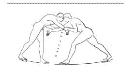

Erkeklerin İdmanı

Antik bir Yunan vazosu üzerinde resmedilmiş güreşçiler
Günümüzdeki klişe Antik Yunan algısının oluşmasında, eşcinselliğin serbest olması, özellikle çıplak yapılan güreşlerde had safhaya ulaşan erkek vücuduna beğeni duyulması durumu ve her şeyin alenen yapıldığı kadın erkek karışık hamamların olması gibi bilgiler etkili olmuştur. Gerçekse çok daha masum ve şaşırtıcıdır.
Öncelikle kadınların ve erkeklerin kullandıkları hamamlar kati suretle ayrılmış ve asla birleştirilmemiştir. Bununla birlikte, Yunan gymnasiumları sadece erkeklere ayrılmıştır ve atletler buralarda gerçekten de çıplak olarak güreş tutmuşlardır.
Gymnasium kelimesi ‘çıplak’ anlamındaki gymnos kelimesinden gelir.
Ancak gymnasiumlar genç erkekleri sırf güreştirmek için değil, diğer spor dallarındaki müsabakalara hazırlamak için de kurulmuştur. Buralar aynı zamanda felsefi ve entelektüel sohbetlerin yapıldığı toplanma yerleri olarak kullanılmıştır.
Sağlığı ve gücü artırmak için yapılan idman, genç erkeğin eğitiminin önemli bir parçası olarak görülmüştür. Atletler, tanrılara övgü amacıyla ve erkek vücudunun estetik olarak beğenilmesini yaygınlaştırmak için çıplak dolaşmıştır. Bu durumsa farklı yorumlamalara yol açmıştır.
Akıl Hocalığı

Aynı şekilde, iyi eğitimli erkeklerin ergenlik çağındaki erkekleri ‘evlat edinmeleri’ âdettendi. Bu akıl hocaları, okulu bitiren gençlerin ahlaki ve toplumsal gelişimlerini devam ettirmek için birer yol gösterici olarak görev alırlardı. Sofokles, “Hepimizin yoldan sapma ihtimali olduğu için, öğreneceklerimizi öğretebilenlerden öğrenmemiz en mantıklısıdır.” demiştir.
Klasik dönem üzerine uzmanlaşan akademisyenler bu hoca-öğrenci ilişkilerinde fiziksel bir ilişkinin âdetten olup olmadığı konusunda farklı görüşteler. Ancak aralarında Sokrates, Platon ve Aristoteles’in de bulunduğu filozofların kendilerini ergenlik çağındaki erkeklerle cinsel ilişkileri kınamak zorunda hissetmeleri, bu ilişkilerin her zaman masum olmadığı yönünde bir göstergedir. Bununla birlikte, eğitim bir yana, yetişkin ve ergen erkekler arasındaki eşcinsel ilişkiler, vazo resimlerinden de anlaşılabileceği üzere, Antik Yunan’da tamamen tabu değildi. Milattan önce 5. yüzyıla gelindiğinde paiderastia ya da pederasti (oğlancılık) Yunan kültüründe çoktan yer edinmişti.